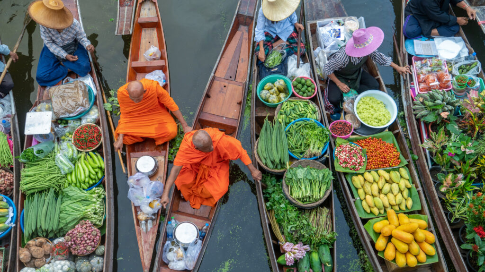
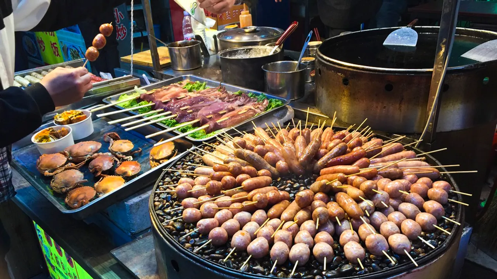

A thai konyha a világ egyik legizgalmasabb és legsokszínűbb gasztronómiai kultúrája. Illatos, fűszeres, színes, és egyszerre képes édeset, sósat, savanyút és csípőset harmonikusan ötvözni. Ez az ízorgia nem véletlen – a thai ételek mögött évszázados tradíciók, buddhista szemlélet és kulturális keveredés áll. Ismerkedjünk meg e varázslatos konyhaművészet főbb jellemzőivel, alapanyagaival, ikonikus fogásaival és étkezési szokásaival!
A thai konyha egyik legfontosabb elve az egyensúly. Nem elég, ha egy étel finom – az igazi thai étel öt alapelemet ötvöz: édes, sós, savanyú, csípős és néha keserű. Ez az egyensúly nemcsak az ízekben, de az állagban, a színekben és az étkezés menetében is megjelenik.
Egy klasszikus thai étkezés több kisebb fogásból áll: egy leves, egy grillezett vagy sült húsétel, zöldségek, rizs és valamilyen mártás vagy savanyúság. Az ételek közösen kerülnek az asztalra, és mindenki mindenből szedhet. Ez nemcsak praktikus, hanem közösségi élménnyé is teszi az étkezést.

A thai konyha gerincét néhány alapvető hozzávaló adja. A legfontosabbak közé tartozik:
Ezeket az alapanyagokat különféle módon kombinálják, és az ételkészítés során az egyensúly megtartása mindig kulcsfontosságú.
Talán a legismertebb thai étel a pad thai, egy wokban készült tésztás fogás. Rizstésztával, rákkal vagy csirkével, tojással, mogyoróval, lime-mal és babcsírával készül. A pad thai tökéletes példa a thai ízharmóniára: édes, savanyú, sós és enyhén csípős.
A Tom Yum egy legendás csípős-savanyú leves, amely gyakran rákot (Tom Yum Goong) tartalmaz. Az alaplevet citromfű, kaffir lime levél, galanga és chili teszi különlegessé. Egy jó Tom Yum egyszerre üdítő és ütős – szinte ébresztőként hat az érzékekre.
A zöld curry az egyik legintenzívebb thai étel. A curry paszta zöld chiliből, fokhagymából, galangából, korianderből készül, amit kókusztejjel és húsfélékkel (pl. csirke) főznek össze. Rizzsel tálalva rendkívül laktató és illatos fogás.
A Som Tam friss, ropogós, pikáns papayasaláta, amely reszelt nyers papayából, chiliből, fokhagymából, paradicsomból, zöldbabból, mogyoróból és lime-léből készül. Frissessége miatt kiváló köret grillezett húsok mellé, vagy akár önmagában is élvezhető.
A khao pad egyszerű, de annál ízletesebb étel: wokban sült rizs zöldségekkel, hússal, szójaszósszal, tojással. Népszerű „gyors kaja”, amelyet gyakran utcán árusítanak.

Thaiföld az utcai ételek paradicsoma. A bangkoki utcákon szinte minden sarkon találunk kis kocsikat, ahol pillanatok alatt elkészítik a forró tésztát, grillezett húsokat, leveseket vagy friss gyümölcsöket. Ezek az ételek gyakran olcsóbbak, frissebbek és ízesebbek, mint amit sok étterem kínál.
Népszerű utcai falatok például:
A thai konyha szorosan összefonódik a buddhista hagyományokkal. A szerzetesek reggelente ételadományokat (alms) kapnak a lakosoktól – ez a közösség és az együttérzés megnyilvánulása. A szerzetesek általában délig esznek, és az ételek sokszor vegetáriánusak.
Bár a thai konyha alapvetően nem vegetáriánus, a buddhista hatás miatt sok húsmentes étel is létezik. A zöldséges curryk, tofus fogások és gyümölcsalapú desszertek népszerűek.
A thai desszertek különlegesek: kókusztej, rizs, gyümölcsök és virágillatú szirupok jellemzik őket. Gyakran használnak pandan levelet, amely zöld színt és finom aromát ad.
Néhány példa:
A thai konyha egy kaland – illatokkal, ízekkel és élményekkel teli. Nemcsak táplál, hanem szórakoztat is. Akár egy tál forró Tom Yum levessel kezdjük, akár egy szelet mangós ragacsos rizzsel zárjuk a napot, a thai ételek mindig egy kicsit közelebb visznek minket Thaiföld lelkéhez.
Tehát ha legközelebb egzotikus ízekre vágysz, ne habozz – próbáld ki a thai konyha varázslatos világát!